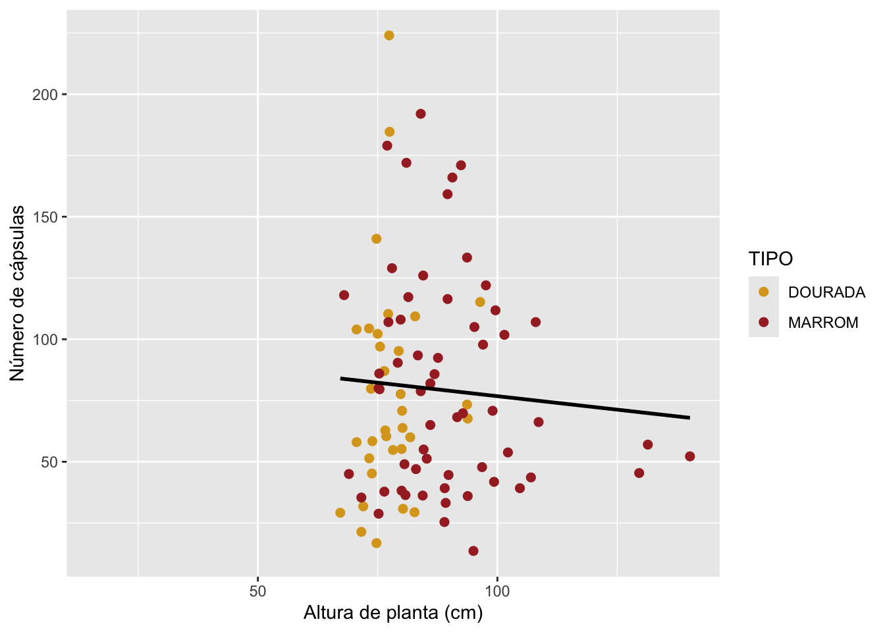
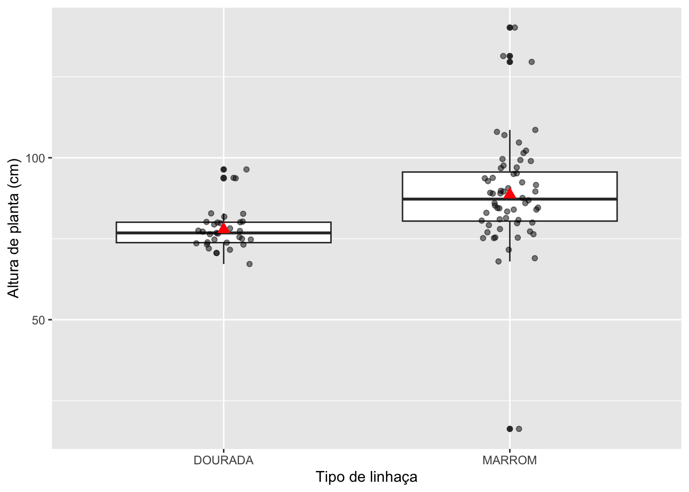
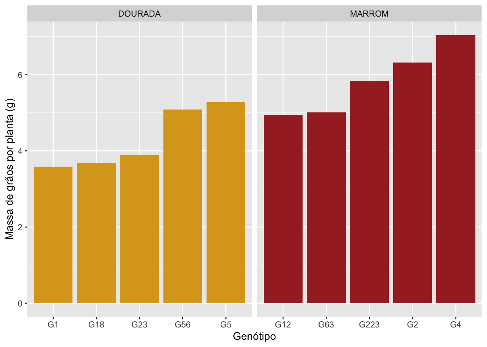
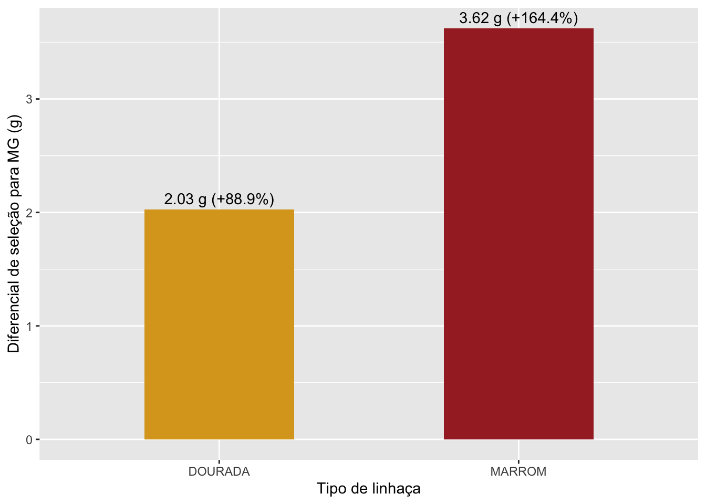

Importe os quatro arquivos de dados (laboratorio.xlsx, capsulas.xlsx, graos.csv, mmg.xlsx) para o seu ambiente R.
library(rio)library(tidyverse)
── Attaching core tidyverse packages ──────────────────────── tidyverse 2.0.0 ──
✔ dplyr 1.2.1 ✔ readr 2.2.0
✔ forcats 1.0.1 ✔ stringr 1.6.0
✔ ggplot2 4.0.3 ✔ tibble 3.3.1
✔ lubridate 1.9.5 ✔ tidyr 1.3.2
✔ purrr 1.2.2
── Conflicts ────────────────────────────────────────── tidyverse_conflicts() ──
✖ dplyr::filter() masks stats::filter()
✖ dplyr::lag() masks stats::lag()
ℹ Use the conflicted package (<http://conflicted.r-lib.org/>) to force all conflicts to become errors
# importar os 4 arquivos df <-import("laboratorio.xlsx")capsulas <-import("capsulas.xlsx")graos <-import("graos.csv")mmg <-import("mmg.xlsx")
2. Análise e Consolidação por Planta
O objetivo desta etapa é criar um único data frame que contenha todas as informações para cada planta (img).
Para o arquivo graos: Calcule o número total de grãos (NG), o comprimento médio (CG) e a largura média (LG) para cada planta.
Para o arquivo capsulas: Calcule o número total de cápsulas (NC) para cada planta.
Extração do ID: Note que nos arquivos de imagem, a identificação da planta é um número no início da coluna img (ex: "100_Cápsulas_..."). Você precisará extrair este número para poder vincular os dados aos do arquivo laboratorio.
Unificação: Junte as estatísticas calculadas (NG, CG, LG, NC) ao data frame principal laboratorio. O resultado deve ser uma tabela onde cada linha corresponde a uma planta (img) com todas as suas variáveis.
# GRAOS # o numero da planta ta no comeco do img, antes do primeiro "_"# separar em duas colunas e excluir o resto graos_planta <- graos |>separate(img, into =c("IMG", "resto"), sep ="_", extra ="merge") |>mutate(IMG =as.numeric(IMG)) |>group_by(IMG) |>summarise(NG =n(),CG =mean(length),LG =mean(width))# CAPSULAS # cada linha é uma capsulacaps_planta <- capsulas |>separate(img, into =c("IMG", "resto"), sep ="_", extra ="merge") |>mutate(IMG =as.numeric(IMG)) |>group_by(IMG) |>summarise(NC =n())# JUNTAR com o laboratorio pela coluna IMGplanta <- df |>left_join(graos_planta, by ="IMG") |>left_join(caps_planta, by ="IMG")
3. Análise e Consolidação por Genótipo
Com os dados consolidados por planta, o próximo passo é agregar as informações para obter um resumo por genótipo.
Agregação: Calcule a média de todas as variáveis numéricas (altura da planta, número de grãos, etc.) para cada genótipo (GEN).
Junção Final: Adicione a informação de massa de mil grãos (mmg) do arquivo mmg ao seu data frame de genótipos.
Resultado Final: O produto desta etapa deve ser um data frame limpo e organizado, onde cada linha representa um genótipo e as colunas representam as médias de suas características.
# media de cada genotipo# resolver NAgenotipo <- planta |>select(-IMG, -PLANTA) |>group_by(TIPO, GEN) |>summarise(across(where(is.numeric), \(x) mean(x, na.rm =TRUE)),.groups ="drop")# mmg tem uma linha por genotipo preciso de TIPO, GEN e mmgmmg_gen <- mmg |>select(TIPO, GEN, mmg) |>rename(MMG = mmg)genotipo <- genotipo |>left_join(mmg_gen, by =c("TIPO", "GEN"))# salvar a tabela finalexport(genotipo, "dados_genotipo.xlsx")
4. Exploração e Visualização
Agora que você tem um dataset final consolidado por genótipo, crie pelo menos duas visualizações diferentes para explorar os dados. O objetivo é investigar possíveis relações entre as variáveis e comparar o desempenho dos genótipos.
Perguntas que você deve responder:
Como a altura da planta se relaciona com o número de cápsulas?
Há indícios de que genótipos do tipo “DOURADA” e “MARROM” diferem em relação à altura de planta?
Quais os top 5 genótipos para produção de grãos (MG) de cada tipo de linhaça?
Calcule o diferencial de seleção, ou seja, a diferença da média geral e a média dos top 5 genótipos, para cada tipo de linhaça, representando os valores em um gráfico de barras.
# Como a altura da planta se relaciona com o número de cápsulas?ggplot(genotipo, aes(x = AP, y = NC)) +geom_point(aes(color = TIPO), size =2) +geom_smooth(method ="lm", se =FALSE, color ="black") +scale_color_manual(values =c("goldenrod", "brown")) +labs(x ="Altura de planta (cm)",y ="Número de cápsulas")
`geom_smooth()` using formula = 'y ~ x'
Warning: Removed 28 rows containing non-finite outside the scale range
(`stat_smooth()`).
Warning: Removed 28 rows containing missing values or values outside the scale range
(`geom_point()`).

# correlacaocor(genotipo$AP, genotipo$NC, use ="complete.obs")
[1] -0.0663049
# Há indícios de que genótipos do tipo "DOURADA" e "MARROM" diferem em relação à altura de planta?ggplot(genotipo, aes(x = TIPO, y = AP)) +geom_boxplot() +geom_jitter(width =0.1, alpha =0.5) +stat_summary(fun = mean,geom ="point",shape =17,size =3,color ="red") +labs(x ="Tipo de linhaça",y ="Altura de planta (cm)")
Warning: Removed 27 rows containing non-finite outside the scale range
(`stat_boxplot()`).
Warning: Removed 27 rows containing non-finite outside the scale range
(`stat_summary()`).
Warning: Removed 27 rows containing missing values or values outside the scale range
(`geom_point()`).

# media de altura de cada tipogenotipo |>group_by(TIPO) |>summarise(AP_media =mean(AP, na.rm =TRUE),AP_dp =sd(AP, na.rm =TRUE))
# A tibble: 2 × 3
TIPO AP_media AP_dp
<chr> <dbl> <dbl>
1 DOURADA 77.9 6.53
2 MARROM 88.7 16.9
# Quais os top 5 genótipos para produção de grãos (MG) de cada tipo de linhaça?top5 <- genotipo |>filter(!is.na(MG)) |>group_by(TIPO) |>slice_max(order_by = MG, n =5) |>ungroup()top5 |>select(TIPO, GEN, MG)
ggplot(top5, aes(x =reorder(GEN, MG), y = MG, fill = TIPO)) +geom_col() +facet_wrap(~TIPO, scales ="free_x") +scale_fill_manual(values =c("goldenrod", "brown")) +labs(x ="Genótipo",y ="Massa de grãos por planta (g)") +theme(legend.position ="none")

# Calcule o diferencial de seleção, ou seja, a diferença da média geral e a média dos top 5 genótipos, para cada tipo de linhaça, representando os valores em um gráfico de barras.# media geral de cada tipomedia_geral <- genotipo |>group_by(TIPO) |>summarise(geral =mean(MG, na.rm =TRUE))# media dos 5 selecionadosmedia_top5 <- top5 |>group_by(TIPO) |>summarise(selecionados =mean(MG))# DS = media dos selecionados - media geralds <- media_geral |>left_join(media_top5, by ="TIPO") |>mutate(DS = selecionados - geral,DS_porc = DS / geral *100)ds
ggplot(ds, aes(x = TIPO, y = DS, fill = TIPO)) +geom_col(width =0.5) +geom_text(aes(label =paste0(round(DS, 2), " g (+", round(DS_porc, 1), "%)")),vjust =-0.5) +scale_fill_manual(values =c("goldenrod", "brown")) +labs(x ="Tipo de linhaça",y ="Diferencial de seleção para MG (g)") +theme(legend.position ="none")

Conclusão
Juntando as quatro planilhas ficou uma tabela com 120 genótipos (incluindo as duas populações GPOP1 e GPOP2), mas 27 deles não têm dados de laboratório (NA). A altura de planta não mostrou relação com o número de cápsulas, a correlação ficou praticamente zero (r = -0,07), então plantas mais altas não necessariamente produzem mais cápsulas. Já entre os tipos teve diferença: os genótipos MARROM foram em média mais altos (88,7 cm contra 77,9 cm dos DOURADA) e também bem mais variáveis. Para massa de grãos por planta (MG) os melhores do tipo DOURADA foram G5, G56, G23, G18 e G1, e os melhores MARROM foram G4, G2, G223, G63 e G12. As médias gerais dos dois tipos são parecidas (cerca de 2,2 a 2,3 g), mas o diferencial de seleção foi maior no tipo MARROM (3,62 g, +164%) do que no tipo DOURADA (2,03 g, +89%), indicando que existe mais variabilidade para selecionar dentro do tipo MARROM.